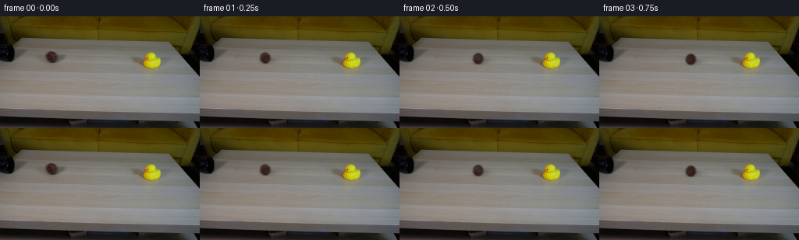
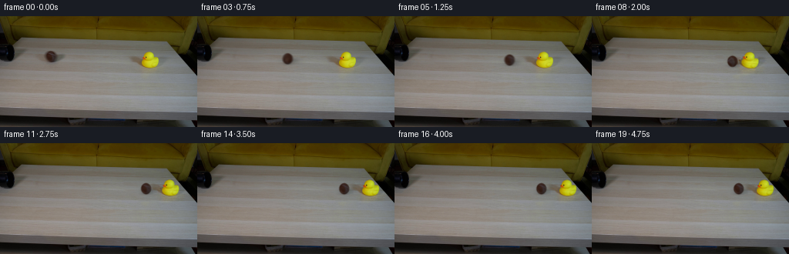
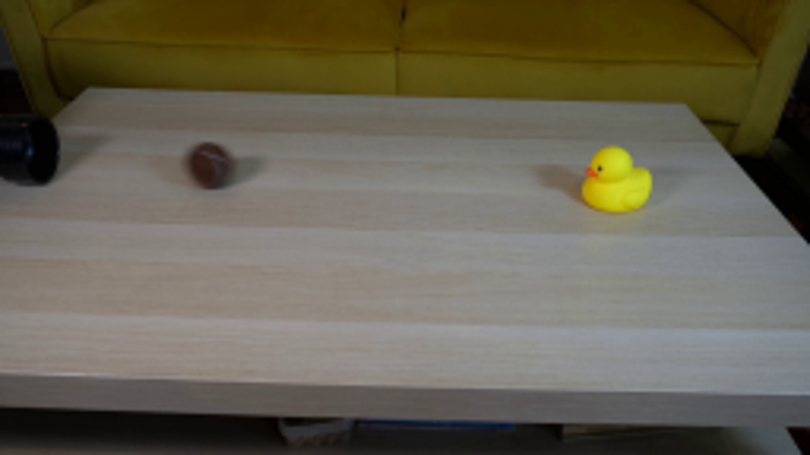
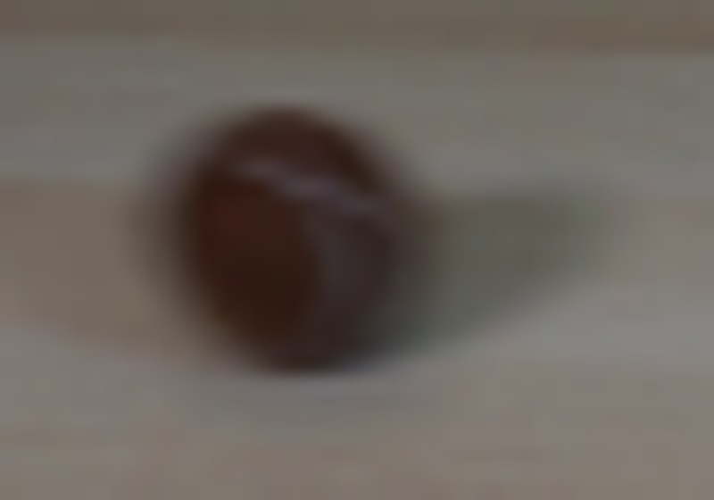
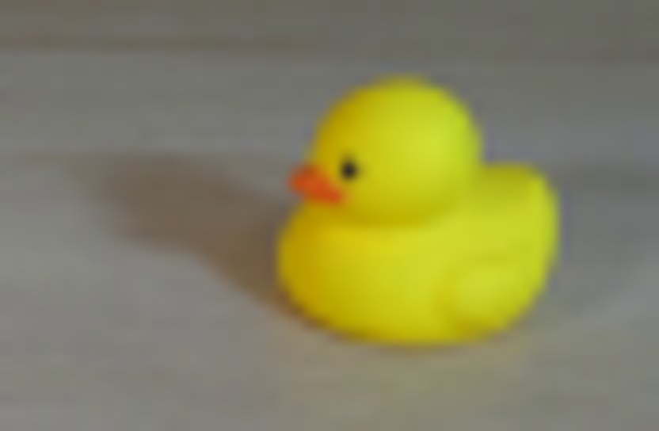
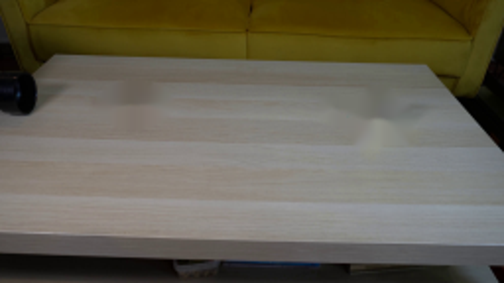
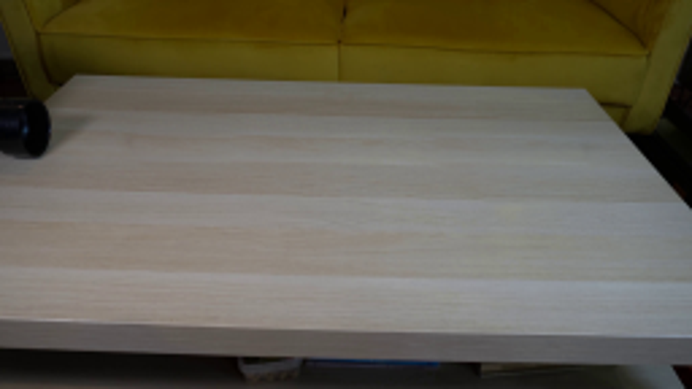
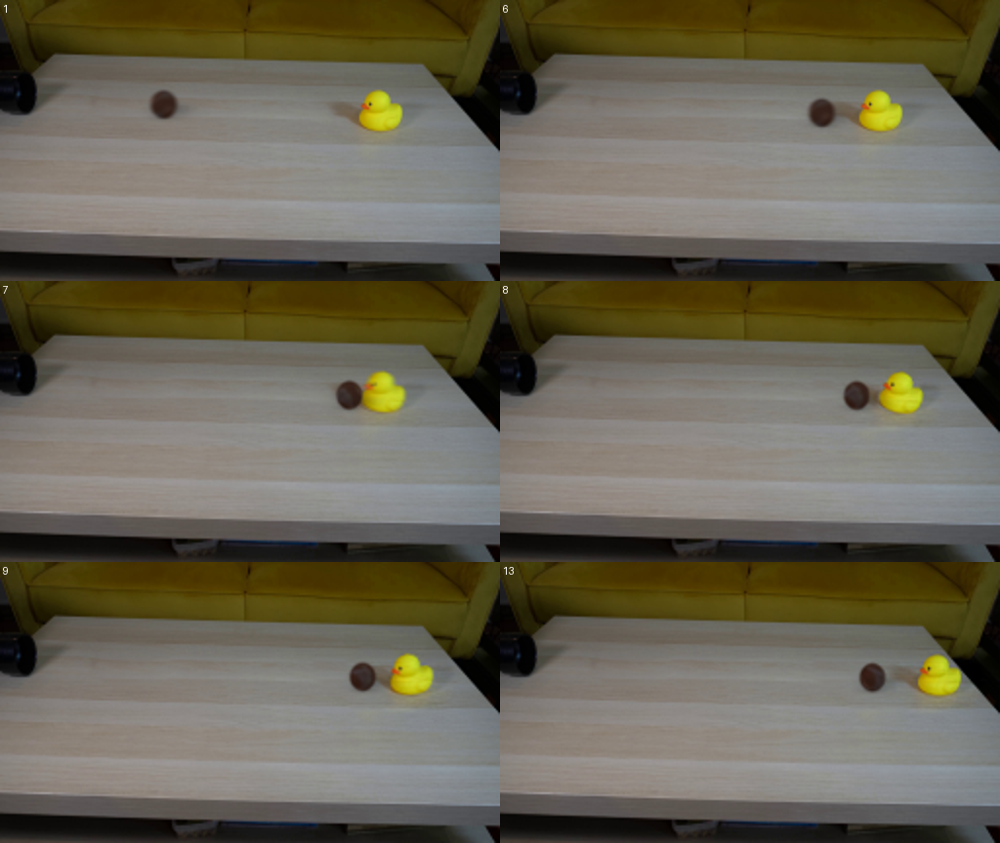

← 本轮 smoke 总览traex/GPT-6-Astra · 0008
vision-agent · 256×144 · 4.0 FPS · 20 帧 · 状态 failed · 输出 tokens 22795
原始任务Static locked-off single-shot with fixed frame throughout filmed with constant framerate in real-time. The scene shows a realistic scientific demonstration. The scene only contains the described setup and actions. A light beige coffee table with a small yellow rubber duck on it. A mustard yellow couch is in the background. There is a black pipe that points from the left side to the right side of the table. The brown tennis ball rolls straight out of the black pipe and hits the rubber duck.
当前保存结果
此结果可播放，但该运行尚未通过最终提交审核。页面展示不代表评测通过。
已保存候选与代码修改
这里按时间展示外部捕获的候选，每份均可单独播放。保存新版本不等于完成视觉检查；下方工具证据记录实际看过的图。
候选 01 · 2026-11-08T17:11:12.436281+00:00 · 点开播放与检查图
inspection.png

transition_check.png

代码变化
--- 上一保存版本
+++ 本次保存版本
@@ -0,0 +1,156 @@
+from pathlib import Path
+import numpy as np
+from PIL import Image
+import cv2
+from scipy.ndimage import map_coordinates
+from artifact_io import save
+
+ROOT=Path(__file__).resolve().parent
+H,W=144,256
+
+def clean_table(im):
+ yy,xx=np.mgrid[:H,:W]
+ valid=(xx>=36)&(xx<=225)&~((xx>=49)&(xx<=87))&~((xx>=161)&(xx<=216))
+ model=np.zeros_like(im)
+ X=np.stack([np.ones(W),(np.arange(W)-130)/100,((np.arange(W)-130)/100)**2],axis=1)
+ for y in range(35,82):
+ model[y]=X@np.linalg.lstsq(X[valid[y]],im[y,valid[y]],rcond=None)[0]
+ ball=np.zeros((H,W),np.float32)
+ cv2.ellipse(ball,(68,53),(19,12),0,0,360,1,-1)
+ duck=np.zeros_like(ball)
+ cv2.fillPoly(duck,[np.array([(161,49),(182,49),(185,43),(199,43),(203,49),(214,51),(217,60),(211,74),(180,75),(175,66),(161,60)])],1)
+ out=im.copy()
+ masks=[]
+ for mask,shift in [(ball,43),(duck,-61)]:
+ mask=cv2.GaussianBlur(mask,(0,0),1.1)
+ sx=np.clip(xx+shift,0,W-1)
+ texture=im[yy,sx]-model[yy,sx]
+ replacement=model+texture*.75
+ out=out*(1-mask[...,None])+replacement*mask[...,None]
+ masks.append(mask)
+ return out,masks
+
+
+def warp(arr,dx=0,dy=0,angle=0,pivot=(194.5,65.5)):
+ M=cv2.getRotationMatrix2D(pivot,angle,1)
+ M[:,2]+=[dx,dy]
+ return cv2.warpAffine(arr,M,(W,H),flags=cv2.INTER_CUBIC,borderMode=cv2.BORDER_CONSTANT)
+
+
+def generate():
+ im=np.array(Image.open(ROOT/'first_frame.png').convert('RGB')).astype(np.float32)
+ bg,masks=clean_table(im)
+ # The moving duck and its cast shadow are separate photographic layers.
+ duck_region=np.zeros((H,W),np.float32); duck_region[:,154:224]=1
+ duck_residual=(im-bg)*duck_region[...,None]
+ yy,xx=np.mgrid[:H,:W]
+ chroma=np.maximum(im[...,0],im[...,1])-im[...,2]
+ matte=np.clip((chroma-24)/64,0,1)*duck_region
+ # Include the small black eye inside the silhouette.
+ matte[(xx-189.2)**2+(yy-53.2)**2<3.5]=1
+ matte[:44]=0; matte[69:]=0
+ matte=cv2.GaussianBlur(matte,(0,0),.28)
+ duck_body=duck_residual*matte[...,None]
+ duck_shadow=duck_residual-duck_body
+
+ # Recover the source ball's brown felt appearance and surface stitching.
+ cx,cy,rx,ry=66.05,52.20,6.55,7.22
+ radius=np.sqrt(((xx-cx)/rx)**2+((yy-cy)/ry)**2)
+ ball_alpha=np.clip((1-radius)*min(rx,ry)/1.15+.5,0,1)
+ ball_alpha=cv2.GaussianBlur(ball_alpha.astype(np.float32),(0,0),.27)
+ # Unmix the blurred boundary from the clean tabletop.
+ foreground=(im-bg*(1-ball_alpha[...,None]))/np.maximum(ball_alpha[...,None],.12)
+ foreground=np.clip(foreground,[37,22,14],[85,75,72])
+ sz=4
+ # An inverse spherical map makes the seam rotate with true rolling motion.
+ grid=(np.arange(80)+.5)/sz-10
+ ly,lx=np.meshgrid(grid,grid,indexing='ij')
+ nx=lx/rx; ny=ly/ry
+ rr=nx*nx+ny*ny
+ nz=np.sqrt(np.clip(1-rr,0,1))
+ norm=np.stack([nx,ny,nz],-1)
+ a=(rr<1).astype(np.float32)
+ axis=np.array([0.,.72,.694]); axis/=np.linalg.norm(axis)
+ cross=np.array([[0,-axis[2],axis[1]],[axis[2],0,-axis[0]],[-axis[1],axis[0],0]])
+ def render_ball(frame,x,y,angle):
+ # Preserve fixed world lighting while the felt texture revolves.
+ R=np.eye(3)*np.cos(angle)+(1-np.cos(angle))*np.outer(axis,axis)+np.sin(angle)*cross
+ local=norm@R
+ tx,ty,tz=local[...,0],local[...,1],local[...,2]
+ # Continue the unseen hemisphere using the same observed felt and seam.
+ tx=np.where(tz>=0,tx,-tx)
+ coords=np.array([cy+ty*ry,cx+tx*rx])
+ color=np.stack([map_coordinates(foreground[...,k],coords,order=1,mode='nearest') for k in range(3)],-1)
+ z=np.sqrt(np.clip(1-tx*tx-ty*ty,0,1))
+ oldlight=.88-.13*ty+.09*z-.04*tx
+ light=.88-.13*ny+.09*nz-.04*nx
+ color=color/oldlight[...,None]*light[...,None]
+ # Suppress background contamination in the few grazing-angle texels.
+ fade=np.clip((np.abs(tz)-.20)/.22,0,1)
+ base=np.array([52.,32.,25.])*light[...,None]/.96
+ color=color*fade[...,None]+base*(1-fade[...,None])
+ # Gentle felt grain, fixed to the material coordinates.
+ grain=.65*np.sin(tx*153+ty*109+tz*51)*np.sin(tx*83-ty*167)
+ color+=grain[...,None]
+ prem=color*a[...,None]
+ prem=cv2.GaussianBlur(prem,(0,0),1.65)
+ alpha=cv2.GaussianBlur(a,(0,0),1.65)
+ prem=cv2.resize(prem,(20,20),interpolation=cv2.INTER_AREA)
+ alpha=cv2.resize(alpha,(20,20),interpolation=cv2.INTER_AREA)
+ # Subpixel positioning, without changing the locked camera.
+ M=np.float32([[1,0,x-9.5],[0,1,y-9.5]])
+ p=cv2.warpAffine(prem,M,(W,H),flags=cv2.INTER_CUBIC)
+ al=cv2.warpAffine(alpha,M,(W,H),flags=cv2.INTER_CUBIC)
+ al=np.clip(al,0,1)
+ return frame*(1-al[...,None])+p
+
+ # Static first frame is already just after the ball has emerged from the pipe.
+ # Constant rolling resistance, then a partially inelastic central collision.
+ v0=70.; decel=6.
+ impact_x=178.
+ tc=(v0-np.sqrt(v0*v0-2*decel*(impact_x-cx)))/decel
+ vi=v0-decel*tc
+ mball,mduck,e=.058,.066,.35
+ vb=(mball-e*mduck)/(mball+mduck)*vi
+ vd=(1+e)*mball/(mball+mduck)*vi
+ def distance(v,a,t):
+ t=np.clip(t,0,v/a)
+ return v*t-.5*a*t*t
+ def state(t):
+ if t<tc:
+ x=cx+v0*t-.5*decel*t*t
+ return x,cy+.052*(x-cx),0.,0.,0.
+ dt=t-tc
+ x=impact_x+distance(vb,11.5,dt)
+ d=distance(vd,23.5,dt)
+ # The low, rounded rubber base rocks at impact and returns upright.
+ tilt=-23*np.exp(-2.65*dt)*np.sin(8.2*dt)
+ if dt>1.65: tilt=0
+ return x,cy+.052*(x-cx),d,d*.043,tilt
+
+ frames=[im.astype(np.uint8)]
+ for i in range(1,20):
+ time=i/4
+ samples=[]
+ for dt in np.linspace(-.019,.019,5):
+ t=time+dt
+ x,y,dd,dy,ang=state(t)
+ frame=bg.copy()
+ if t<tc:
+ frame+=duck_residual
+ else:
+ frame+=warp(duck_shadow,dd,dy)
+ frame+=warp(duck_body,dd,dy,ang)
+ # Two soft contact/cast shadow lobes travel with the rolling ball.
+ sh1=np.exp(-.5*(((xx-(x+4.3))/6.9)**2+((yy-(y+2.6))/2.5)**2))
+ sh2=np.exp(-.5*(((xx-(x+.2))/4.3)**2+((yy-(y+6.5))/1.1)**2))
+ frame*=1-(.235*sh1+.155*sh2)[...,None]
+ angle=(x-cx)/rx
+ frame=render_ball(frame,x,y,angle)
+ samples.append(frame)
+ frames.append(np.uint8(np.clip(np.mean(samples,axis=0),0,255).round()))
+ return np.stack(frames)
+
+if __name__=='__main__':
+ frames=generate()
+ save(frames,ROOT)
候选 02 · 2026-11-08T17:12:07.306723+00:00 · 点开播放与检查图
inspection.png

transition_check.png

代码变化
--- 上一保存版本
+++ 本次保存版本
@@ -45,11 +45,12 @@
duck_residual=(im-bg)*duck_region[...,None]
yy,xx=np.mgrid[:H,:W]
chroma=np.maximum(im[...,0],im[...,1])-im[...,2]
- matte=np.clip((chroma-24)/64,0,1)*duck_region
+ matte=((chroma>39)&(xx>=182)&(xx<=208)&(yy>=45)&(yy<=68)).astype(np.float32)
# Include the small black eye inside the silhouette.
matte[(xx-189.2)**2+(yy-53.2)**2<3.5]=1
matte[:44]=0; matte[69:]=0
- matte=cv2.GaussianBlur(matte,(0,0),.28)
+ matte=cv2.dilate(matte,np.ones((3,3),np.uint8))
+ matte=cv2.GaussianBlur(matte,(0,0),.40)
duck_body=duck_residual*matte[...,None]
duck_shadow=duck_residual-duck_body
可观测工具行为
命令 1 · 2026-11-08T17:02:03.795044+00:00/bin/bash -lc "ls -la && cat prompt.txt && printf '\\n---RULES---\\n' && cat GENERATION_RULES.md"
exit 0 命令 2 · 2026-11-08T17:02:17.137139+00:00/bin/bash -lc "cat artifact_io.py && python - <<'PY'
from PIL import Image
im=Image.open('first_frame.png'); im.resize((1024,576)).save('.tmp/upscaled.png')
PY"exit 0 命令 3 · 2026-11-08T17:03:05.251201+00:00/bin/bash -lc "python - <<'PY'
from PIL import Image
im=Image.open('first_frame.png')
im.crop((50,39,90,67)).resize((800,560)).save('.tmp/ball.png')
im.crop((162,40,214,74)).resize((832,544)).save('.tmp/duck.png')
import importlib.util
for a in ['cv2','numpy','scipy','PIL']: print(a, bool(importlib.util.find_spec(a)))
PY"exit 0 命令 4 · 2026-11-08T17:05:03.881565+00:00/bin/bash -lc "python - <<'PY'
from PIL import Image,ImageDraw
im=Image.open('first_frame.png'); out=im.crop((178,43,209,70)).resize((620,540),Image.Resampling.NEAREST)
d=ImageDraw.Draw(out)
for x in range(178,209):
for y in range(43,70):
if x%2==0 and y%2==0:d.text(((x-178)*20,(y-43)*20),f'{x},{y}',fill='red',font=None)
out.save('.tmp/gridduck.png')
PY"exit 0 命令 5 · 2026-11-08T17:05:41.593499+00:00/bin/bash -lc "python - <<'PY'
import numpy as np
from PIL import Image
im=np.array(Image.open('first_frame.png'))
for y in [44,45,46,47,48,50,54,58,62,66,67,68,70]:
print(y,[(x,tuple(im[y,x])) for x in [180,183,184,185,187,190,194,198,202,205,207,210]])
PY"exit 0 命令 6 · 2026-11-08T17:06:22.453596+00:00/bin/bash -lc "cat > .tmp/test_bg.py <<'PY'
import cv2,numpy as np
from PIL import Image
im=np.array(Image.open('first_frame.png'))
m=np.zeros(im.shape[:2],np.uint8)
cv2.ellipse(m,(68,53),(20,12),0,0,360,255,-1)
cv2.fillPoly(m,[np.array([(163,48),(182,49),(186,44),(197,44),(201,50),(207,52),(211,59),(208,73),(180,74),(174,65),(161,58)])],255)
for typ in [cv2.INPAINT_TELEA,cv2.INPAINT_NS]:
bg=cv2.inpaint(im,m,4,typ)
Image.fromarray(bg).resize((1024,576)).save(f'.tmp/bg{typ}.png')
PY
python .tmp/test_bg.py"exit 0 命令 7 · 2026-11-08T17:07:31.868478+00:00/bin/bash -lc "cat > .tmp/background.py <<'PY'
import numpy as np,cv2
from PIL import Image
im=np.array(Image.open('first_frame.png')).astype(float)
h,w=im.shape[:2]; yy,xx=np.mgrid[:h,:w]
# Fit a gently varying, rowwise horizontal illumination field to unobstructed tabletop.
valid=(xx>=36)&(xx<=225)&~((xx>=49)&(xx<=87))&~((xx>=161)&(xx<=216))
model=np.zeros_like(im)
for y in range(36,81):
good=valid[y]
X=np.stack([np.ones(w), (np.arange(w)-130)/100, ((np.arange(w)-130)/100)**2],axis=1)
coef=np.linalg.lstsq(X[good],im[y,good],rcond=None)[0]
model[y]=X@coef
bg=im.copy()
m=np.zeros((h,w),np.float32)
cv2.ellipse(m,(68,53),(19,12),0,0,360,1,-1)
b=np.zeros_like(m)
cv2.fillPoly(b,[np.array([(161,49),(182,49),(185,43),(199,43),(203,49),(214,51),(217,60),(211,74),(180,75),(175,66),(161,60)])],1)
for mask,shift in [(m,43),(b,-61)]:
mask=cv2.GaussianBlur(mask,(0,0),1.1)
source=np.clip(xx+shift,0,w-1)
text=im[yy,source]-model[yy,source]
replacement=model+text*.75
bg=bg*(1-mask[...,None])+replacement*mask[...,None]
Image.fromarray(np.uint8(np.clip(bg,0,255))).save('.tmp/clean.png')
Image.fromarray(np.uint8(np.clip(bg,0,255))).resize((1024,576)).save('.tmp/cleanlarge.png')
np.save('.tmp/background.npy',bg)
PY
python .tmp/background.py"exit 0 命令 8 · 2026-11-08T17:08:53.063013+00:00/bin/bash -lc "python - <<'PY'
from PIL import Image
import numpy as np
im=np.array(Image.open('first_frame.png')).astype(float)
for y in range(43,62):
print(y, ''.join('O' if (im[y,x].mean()<58) else 'o' if im[y,x].mean()<90 else '.' for x in range(53,82)))
PY"exit 0 命令 9 · 2026-11-08T17:09:52.706247+00:00/bin/bash -lc "python - <<'PY'
import numpy as np
from PIL import Image
im=np.array(Image.open('first_frame.png'))
for y in range(46,59):
print(y, ['%3d/%3d/%3d'%tuple(im[y,x]) for x in range(59,74)])
PY"exit 0 命令 10 · 2026-11-08T17:11:11.459152+00:00/bin/bash -lc "cat > generate.py <<'PY'
from pathlib import Path
import numpy as np
from PIL import Image
import cv2
from scipy.ndimage import map_coordinates
from artifact_io import save
ROOT=Path(__file__).resolve().parent
H,W=144,256
def clean_table(im):
yy,xx=np.mgrid[:H,:W]
valid=(xx>=36)&(xx<=225)&~((xx>=49)&(xx<=87))&~((xx>=161)&(xx<=216))
model=np.zeros_like(im)
X=np.stack([np.ones(W),(np.arange(W)-130)/100,((np.arange(W)-130)/100)**2],axis=1)
for y in range(35,82):
model[y]=X@np.linalg.lstsq(X[valid[y]],im[y,valid[y]],rcond=None)[0]
ball=np.zeros((H,W),np.float32)
cv2.ellipse(ball,(68,53),(19,12),0,0,360,1,-1)
duck=np.zeros_like(ball)
cv2.fillPoly(duck,[np.array([(161,49),(182,49),(185,43),(199,43),(203,49),(214,51),(217,60),(211,74),(180,75),(175,66),(161,60)])],1)
out=im.copy()
masks=[]
for mask,shift in [(ball,43),(duck,-61)]:
mask=cv2.GaussianBlur(mask,(0,0),1.1)
sx=np.clip(xx+shift,0,W-1)
texture=im[yy,sx]-model[yy,sx]
replacement=model+texture*.75
out=out*(1-mask[...,None])+replacement*mask[...,None]
masks.append(mask)
return out,masks
def warp(arr,dx=0,dy=0,angle=0,pivot=(194.5,65.5)):
M=cv2.getRotationMatrix2D(pivot,angle,1)
M[:,2]+=[dx,dy]
return cv2.warpAffine(arr,M,(W,H),flags=cv2.INTER_CUBIC,borderMode=cv2.BORDER_CONSTANT)
def generate():
im=np.array(Image.open(ROOT/'first_frame.png').convert('RGB')).astype(np.float32)
bg,masks=clean_table(im)
# The moving duck and its cast shadow are separate photographic layers.
duck_region=np.zeros((H,W),np.float32); duck_region[:,154:224]=1
duck_residual=(im-bg)*duck_region[...,None]
yy,xx=np.mgrid[:H,:W]
chroma=np.maximum(im[...,0],im[...,1])-im[...,2]
matte=np.clip((chroma-24)/64,0,1)*duck_region
# Include the small black eye inside the silhouette.
matte[(xx-189.2)**2+(yy-53.2)**2<3.5]=1
matte[:44]=0; matte[69:]=0
matte=cv2.GaussianBlur(matte,(0,0),.28)
duck_body=duck_residual*matte[...,None]
duck_shadow=duck_residual-duck_body
# Recover the source ball's brown felt appearance and surface stitching.
cx,cy,rx,ry=66.05,52.20,6.55,7.22
radius=np.sqrt(((xx-cx)/rx)**2+((yy-cy)/ry)**2)
ball_alpha=np.clip((1-radius)*min(rx,ry)/1.15+.5,0,1)
ball_alpha=cv2.GaussianBlur(ball_alpha.astype(np.float32),(0,0),.27)
# Unmix the blurred boundary from the clean tabletop.
foreground=(im-bg*(1-ball_alpha[...,None]))/np.maximum(ball_alpha[...,None],.12)
foreground=np.clip(foreground,[37,22,14],[85,75,72])
sz=4
# An inverse spherical map makes the seam rotate with true rolling motion.
grid=(np.arange(80)+.5)/sz-10
ly,lx=np.meshgrid(grid,grid,indexing='ij')
nx=lx/rx; ny=ly/ry
rr=nx*nx+ny*ny
nz=np.sqrt(np.clip(1-rr,0,1))
norm=np.stack([nx,ny,nz],-1)
a=(rr<1).astype(np.float32)
axis=np.array([0.,.72,.694]); axis/=np.linalg.norm(axis)
cross=np.array([[0,-axis[2],axis[1]],[axis[2],0,-axis[0]],[-axis[1],axis[0],0]])
def render_ball(frame,x,y,angle):
# Preserve fixed world lighting while the felt texture revolves.
R=np.eye(3)*np.cos(angle)+(1-np.cos(angle))*np.outer(axis,axis)+np.sin(angle)*cross
local=norm@R
tx,ty,tz=local[...,0],local[...,1],local[...,2]
# Continue the unseen hemisphere using the same observed felt and seam.
tx=np.where(tz>=0,tx,-tx)
coords=np.array([cy+ty*ry,cx+tx*rx])
color=np.stack([map_coordinates(foreground[...,k],coords,order=1,mode='nearest') for k in range(3)],-1)
z=np.sqrt(np.clip(1-tx*tx-ty*ty,0,1))
oldlight=.88-.13*ty+.09*z-.04*tx
light=.88-.13*ny+.09*nz-.04*nx
color=color/oldlight[...,None]*light[...,None]
# Suppress background contamination in the few grazing-angle texels.
fade=np.clip((np.abs(tz)-.20)/.22,0,1)
base=np.array([52.,32.,25.])*light[...,None]/.96
color=color*fade[...,None]+base*(1-fade[...,None])
# Gentle felt grain, fixed to the material coordinates.
grain=.65*np.sin(tx*153+ty*109+tz*51)*np.sin(tx*83-ty*167)
color+=grain[...,None]
prem=color*a[...,None]
prem=cv2.GaussianBlur(prem,(0,0),1.65)
alpha=cv2.GaussianBlur(a,(0,0),1.65)
prem=cv2.resize(prem,(20,20),interpolation=cv2.INTER_AREA)
alpha=cv2.resize(alpha,(20,20),interpolation=cv2.INTER_AREA)
# Subpixel positioning, without changing the locked camera.
M=np.float32([[1,0,x-9.5],[0,1,y-9.5]])
p=cv2.warpAffine(prem,M,(W,H),flags=cv2.INTER_CUBIC)
al=cv2.warpAffine(alpha,M,(W,H),flags=cv2.INTER_CUBIC)
al=np.clip(al,0,1)
return frame*(1-al[...,None])+p
# Static first frame is already just after the ball has emerged from the pipe.
# Constant rolling resistance, then a partially inelastic central collision.
v0=70.; decel=6.
impact_x=178.
tc=(v0-np.sqrt(v0*v0-2*decel*(impact_x-cx)))/decel
vi=v0-decel*tc
mball,mduck,e=.058,.066,.35
vb=(mball-e*mduck)/(mball+mduck)*vi
vd=(1+e)*mball/(mball+mduck)*vi
def distance(v,a,t):
t=np.clip(t,0,v/a)
return v*t-.5*a*t*t
def state(t):
if t<tc:
x=cx+v0*t-.5*decel*t*t
return x,cy+.052*(x-cx),0.,0.,0.
dt=t-tc
x=impact_x+distance(vb,11.5,dt)
d=distance(vd,23.5,dt)
# The low, rounded rubber base rocks at impact and returns upright.
tilt=-23*np.exp(-2.65*dt)*np.sin(8.2*dt)
if dt>1.65: tilt=0
return x,cy+.052*(x-cx),d,d*.043,tilt
frames=[im.astype(np.uint8)]
for i in range(1,20):
time=i/4
samples=[]
for dt in np.linspace(-.019,.019,5):
t=time+dt
x,y,dd,dy,ang=state(t)
frame=bg.copy()
if t<tc:
frame+=duck_residual
else:
frame+=warp(duck_shadow,dd,dy)
frame+=warp(duck_body,dd,dy,ang)
# Two soft contact/cast shadow lobes travel with the rolling ball.
sh1=np.exp(-.5*(((xx-(x+4.3))/6.9)**2+((yy-(y+2.6))/2.5)**2))
sh2=np.exp(-.5*(((xx-(x+.2))/4.3)**2+((yy-(y+6.5))/1.1)**2))
frame*=1-(.235*sh1+.155*sh2)[...,None]
angle=(x-cx)/rx
frame=render_ball(frame,x,y,angle)
samples.append(frame)
frames.append(np.uint8(np.clip(np.mean(samples,axis=0),0,255).round()))
return np.stack(frames)
if __name__=='__main__':
frames=generate()
save(frames,ROOT)
PY
python generate.py"exit 0 命令 11 · 2026-11-08T17:11:34.566573+00:00/bin/bash -lc "python - <<'PY'
from PIL import Image,ImageDraw
out=Image.new('RGB',(1024,864))
for j,i in enumerate([1,6,7,8,9,13]):
im=Image.open(f'frames/{i:02}.png').resize((512,288))
out.paste(im,((j%2)*512,(j//2)*288))
ImageDraw.Draw(out).text(((j%2)*512+3,(j//2)*288+3),str(i),fill='white')
out.save('.tmp/detail.png')
PY"exit 0 命令 12 · 2026-11-08T17:12:06.409035+00:00/bin/bash -lc "cp inspection.png .tmp/inspection_v1.png
python - <<'PY'
p='generate.py'
s=open(p).read()
s=s.replace(\"matte=np.clip((chroma-24)/64,0,1)*duck_region\", \"matte=((chroma>39)&(xx>=182)&(xx<=208)&(yy>=45)&(yy<=68)).astype(np.float32)\")
s=s.replace(\"matte=cv2.GaussianBlur(matte,(0,0),.28)\",\"matte=cv2.dilate(matte,np.ones((3,3),np.uint8))\\n matte=cv2.GaussianBlur(matte,(0,0),.40)\")
open(p,'w').write(s)
PY
python generate.py
python - <<'PY'
from PIL import Image,ImageDraw
out=Image.new('RGB',(1024,432))
for j,i in enumerate([0,7,8,12]):
im=Image.open(f'frames/{i:02}.png').crop((163,38,244,77)).resize((512,216))
out.paste(im,((j%2)*512,(j//2)*216))
ImageDraw.Draw(out).text(((j%2)*512+3,(j//2)*216+3),str(i),fill='white')
out.save('.tmp/duckmoves.png')
PY"exit 0 视觉工具实际返回图片 1

视觉工具实际返回图片 2

视觉工具实际返回图片 3

视觉工具实际返回图片 4

视觉工具实际返回图片 5

视觉工具实际返回图片 6
视觉工具实际返回图片 7

保存候选 2 份；完成命令 12 次；可验证图片返回 7 张。原始 API 响应与完整日志保留在本地。